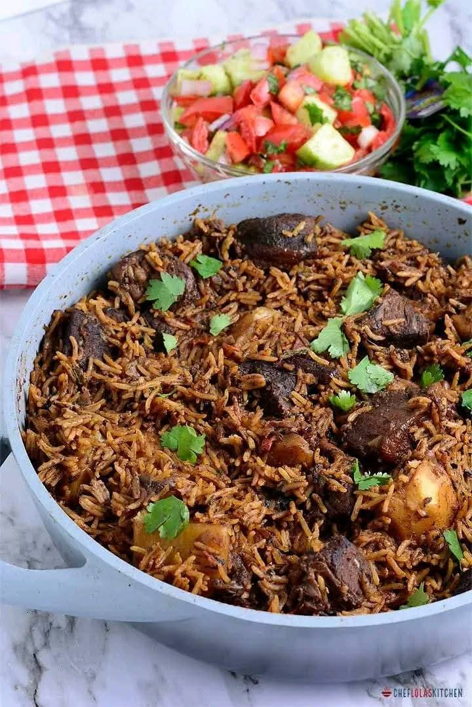

Home
Pilau Rice

Description
Pilau rice is a fragrant, spiced rice dish that pairs perfectly with curries, grilled meats, or can be enjoyed on its
own. Infused with aromatic spices like cumin, cardamom, and cinnamon, this dish is easy to prepare and adds a rich depth
of flavor to any meal.
Ingredients
- 1 cup basmati rice
- 2 tablespoons oil or ghee
- 1 small onion, finely chopped
- 2 cloves garlic, minced
- 3 cardamom pods
- 1 cinnamon stick
- ½ teaspoon turmeric powder
- 1 teaspoon garam masala
- 2 cups water or vegetable broth
- ½ teaspoon salt (or to taste)
- 1 bay leaf
- ½ cup peas (optional)
- Fresh coriander for garnish (optional)
Steps to prepare
- Rinse the basmati rice under cold water until the water runs clear, then soak for 20 minutes. Drain and set aside.
- Heat oil or ghee in a pot over medium heat. Add cumin seeds, cardamom pods, cinnamon stick, and bay leaf. Sauté for 30 seconds until fragrant.
- Add the chopped onion and cook until golden brown, then stir in the garlic.
- Mix in turmeric powder and garam masala, cooking for a few seconds to release their aroma.
- Add the drained rice and stir to coat with the spices.
- Pour in water or vegetable broth and add salt. Bring to a boil, then reduce heat to low. Cover and let it simmer for 15 minutes.
- If using peas, add them in the last 5 minutes of cooking.
- Once the rice is cooked and the liquid is absorbed, remove from heat and let it sit covered for 5 minutes.
- Fluff with a fork, garnish with fresh coriander, and serve hot.